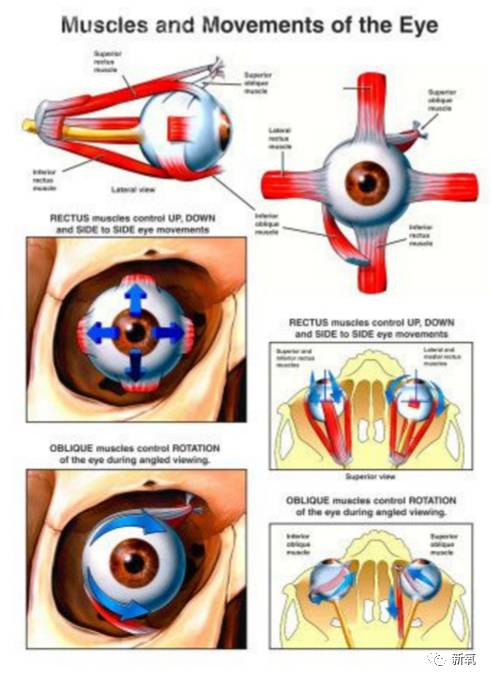
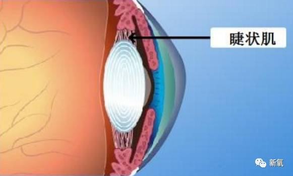

正文:
谢邀~
这个问题夸张点回答可以这样说：赵丽颖再继续戴眼镜的话，包子脸可能就要变成脸颊凹陷颧骨突出了，别怕，都说了是夸张了，下面迷死氧来解释下吼~
你们有没有发现好多明星戴上眼镜超帅哒~
或者是这种圆圆的很可爱。
还有斯斯文文很知性款。
可真正的近视眼们，却对眼镜又爱又恨。
不仅戴上显得人眼睛小、眼睛还越来越无神、脸平，眼球突出、黑眼圈··· 数不清的影响。
想知道为啥会这样不？想知道怎么解决不？
在解释为什么会对容貌有这些影响之前，我们先来搞清楚一下近视眼的生理意义和为毛要戴眼镜。（这部分很重要呐，就两三句话，但是和下面发分析全都相关哦）
先认识几个部位，不用全部认识吼，记得晶状体、睫状肌和视网膜就可以啦。
关于近视最直白的解释：如果眼球的前后径过长，或者晶状体过厚，就很容易导致远处的物体反射来的光线通过晶状体折射后形成的物象落在视网膜前方，因而看不清远处的物体。
轴性近视和屈光近视。
因为这种成像在视网膜前，所以我们需要一个将成像后移的措施才能恢复视力，于是便出现了近视眼镜。
所有的近视眼镜都是凹透镜，原因就是将入光实现一定程度的分散，来达到准确抵达视网膜的效果。
解释完近视的成因和为什么近视眼镜是凹面镜，我们开始分析近视和眼镜对我们颜值的影响吧，从容易理解的分析来说吼。
眼镜影响颜值第一重，显得眼睛小
这部分很好理解啦，大家经常看到高度数的人戴眼镜是这样的效果对不？
一瞬间葡萄变绿豆，不绕着对方走半圈看看镜片后的眼睛，都不敢打招呼。
为什么会这样呢？和上面所说的近视眼佩戴凹面镜息息相关。
放大镜大家都玩过吧。
放大镜所采用的是凸透镜。
根据凸透镜的特性，可以放大物体的像。
与之特性相反的凹透镜，自然就很容易理解为什么是呈缩小的像啦。（如下图）
当凹透镜佩戴在脸上时，会发现从眼镜区域看过去，线条自动折叠了一段。
红线为真实脸部曲线，黄线为凹透镜所呈现的缩小的轮廓曲线。
从正面看，就更明显啦。
所以自然眼睛会显得比实际的小。

度数越高，缩小的程度越明显。
眼镜影响颜值第二重，眼球突出
我们经常见到高度近视的人，随着戴眼镜的年限越长，眼球越突出，Miss Young在学生时代眼睁睁看着身边的同学慢慢变成金鱼眼。
这种变化，最主要的一个原因就是：眼轴变长。
眼轴，简单的来解释就是：从角膜－晶状体－玻璃体－视网膜的距离看成是物理中的光学系统的一条中轴线，这就是所谓“眼轴”。
也就意味着眼轴越长，眼球的纵向长度更长，可想而知，自然更容易突出眼眶。
而且，眼轴还会随着度数的增加而变长。
正常人的眼轴是24mm，平均每增加300度，眼轴变长1mm。所以你们可以观察看看，通常高度近视的眼球突出更明显，重要原因就是眼轴的变长更多。
看眼球突出的变化。
迷死氧个人觉得，这种眼球突出还有一部分原因就是用眼习惯，你们有木有发现，戴上眼镜之后，视线非常的受阻？不自觉的就更爱用转头来调整视线，因为这个时候转眼睛起的作用不大。
而这样的习惯会导致眼球旁边的肌肉无法得到锻炼，慢慢的眼球中心高度不变，四周肌肉退化。
是不是更容易显得眼球突出了？
当然眼球突出还有别的原因，比如甲亢等等，不过今天我们只写近视和戴眼镜对这里的影响吼。
眼镜影响颜值第三重，眼睛无神，死鱼眼
把这部分放在第三个说因为和第二个息息相关。都与我们的眼周肌肉相关。
因为视线的局限，和不佩戴的人相比，眼球的大幅转动减少很多很多。眼球自主的转动减少，一方面肌肉得不到锻炼，久而久之，习惯性的不使用肌肉便会影响眼神的表达。
毕竟我们的眼神变化，其实是眼周肌肉的微小变化才表达出不同情绪。
另一方面，从眼球本身来看。因为近视导致的用眼习惯，习惯性的瞳孔居中，便会像下图一样，渐渐丧失了自主的灵动感。
写文的时候，Miss Young的朋友告诉迷死氧，长期佩戴眼镜的人眼球大幅转动减少除了视线受阻，还有一部分原因在于近视眼镜的镜片，一般的镜片只有中心大约5mm的区域是真实的成像，其余的镜片区域都有一定程度的偏差，所以久而久之戴眼镜的同学们就习惯眼睛聚焦在中心点了，就更喜欢看别处用转头替代而不是转眼球。
眼镜影响颜值第四重，脸部立体感锐减
这样的他们，是不是比不戴眼镜的时候显得脸扁平很多？
从正面来说，眼镜将脸部最体现立体感的，眼窝、鼻子、颧骨几乎全部遮盖住了。
从另一个角度来说，因为戴眼镜后，眼周的肌肉使用减少，所以导致我们关联脸部soof脂肪垫、颧脂垫的都肌肉也力量更弱。
于是就更容易出现soof脂肪垫和颧脂垫等的下移。
而这种下移就自然很容易让人觉得眶底区域不够饱满，进而觉得立体度不够。
从另一角度来说，在成年之前，骨骼的发育还未完成，这时候如果长时间的佩戴较重且不合适的眼镜，会影响我们的面部骨骼发育，比如，鼻骨。所以自然也会影响面部的立体度。
眼镜影响颜值第五重，黑眼圈明显
高度近视不仅仅容易产生黑眼圈，还容易出现泪沟。
想知道这三者之间有什么关系吗？为什么高度近视和戴眼镜会导致黑眼圈和泪沟？接着看啦~
最直接的一个关系：长期佩戴眼镜的人，很容易对眼部区域造成压迫，自然极易造成眼周的血液循环不良，于是便很容易产生黑眼圈。
另一方面，就像我们在文章里面提到的soof脂肪垫和颧脂垫与泪沟、眼袋、黑眼圈的关系。
眼轮匝肌的肌肉力量减弱，自然很容易导致这几个相关脂肪垫的下移，所以泪沟和黑眼圈就会比没有近视和长期佩戴眼镜的人更容易产生。
怎么来解决这些问题？
首要的当然是好好保护自己的视力。（这句不是废话咩）不过这里需要跟大家说一个容易被忽视的地方，睫状肌。
当我们的眼睛在看近处物体一段时间，然后调整视线眺望远处，就会有短暂的不清晰，健康的眼睛很快就能调节过来，而近视眼就无法调节。
而睫状肌就是通过它的收缩、放松来调整我们的晶状体的对焦能力。
可是当我们持续的看近物时间过长，便会造成睫状肌痉挛，导致视力度数加重。
大多数人的近视是从假性近视进化而来的。就是因为长期的近距离用眼，导致睫状肌的调节功能下降，晶状体不能正常工作，便导致了假性近视。
而且因为过早的假性近视配镜，对于长期和所看物品（比如书籍）保持距离在半米的人来说，配镜度数实际上是大于眼睛本身的需求度数的，所以在这种情况下，睫状肌为了适应眼镜的度数，被迫调节，所以你会发现校园时代的自己，哪怕再怎么注意用眼，做眼保健操，也每年度数在增长。没时间了，所以直接说结论。如果你们还在未成年时期，或者已经有了宝宝，一定要注意眼部的睫状肌的锻炼和调节，比如时不时看看电脑，看看远方，热敷眼睛，闭目养神等等。
第二招，每天进行眼球的上下左右大幅度的转动锻炼。
这部分的原因不用多做解释了吧，我们的眼镜眼（嗯！自创的~）很大程度就是因为这个啊。
第三招，戴隐形眼镜。
虽然戴隐形眼镜会比框架眼镜麻烦很多，但是对眼睛以及脸部原貌维持是最有效的。不过如果你有近期要做近视眼矫正的打算，那还是乖乖戴框架吧，因为隐形眼镜很容易将我们的角膜磨损，可能会导致手术的无法进行。
不要吝啬你们的赞~迷死氧需要被肯定~
最后欢迎大家关注迷死氧的公号：新氧（ID：soyoung111）迷死氧写文章都很辛苦的，请大家尊重原创，大家看到不规范的转载一定要和迷死氧举报，当然规范转载也欢迎私信~谢谢大家